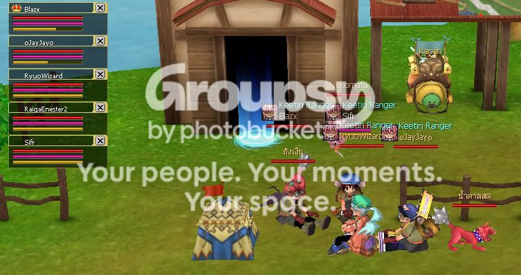

หน้า 3 จากทั้งหมด 100

โพสต์แล้ว:
พุธ 02 ม.ค. 2008 8:24 amโดย ECO
ปล. ใครจะรับเป็นหน้าม้า ซื้อใบเปิดคลัง(Cash) เพื่อส่ง Keetin หลักแสนๆ ชิ้นเข้า NPC ละ ?
ถ้าจะให้วิ่งรอกขน Keetin รอบละ 400 อันจากโกดัง Easter Cape >>> บ้านหมาน้อย ... หึๆๆ
ปล2. ไปหาต้นฉบับมาแปลหน่อยดีกว่า *-*
ปกติใช้วิธีโยนขึ้นสวนลอย จอดหน้าบ้าน วิ่งเข้า สวนปิด วิ่งออกเปิดใหม่...
เพื่อนในริงคนนึงก็มีตัวเปิดคลังเหมือนกัน แต่โกดังเขาไม่ค่อยมีที่เก็บ
อีกวิธีนึงคือ ให้โยนขึ้นไปเก็บไว้บนสวนลอยก่อน แล้วให้Keetin Rangerทั้งหลายวิ่งขึ้นบ้านไปรับเทรดทีละคนลงมาส่ง...
ปล. ถ้าจะกันไม่ให้มีคนสวมรอย เดี๋ยวกำหนดดีกว่าว่าในแมปไหนจะมีโกเล็มชื่ออะไรกันบ้าง ของผมนี่แมปโมโม ชื่อMorgana ปกติตั้งเป็นโกดังเก็บของตอนเก็บเลเวล เลยรับมั่วไปหมด แต่อาจจะไม่ได้ออนตลอดเวลาเพราะต้องมีพักเคลียร์คลังด้วย...
โพสต์แล้ว:
พุธ 02 ม.ค. 2008 1:01 pmโดย ECO
อืม :?
ข้อมูลใหม่ เข้าใจผิดมานาน ที่แท้ก็แบบนี้นี่เอง
แต่ก็ดีอยู่ดีแหละ
ช่วยกันเดี๋ยวมันก็สำเร็จเองล่ะนะ
เซิฟทาโกะ
ตอนนี้มีโครงการระดมพลล้างบางบรรดาหนอนอีกรึป่าวเอ่ย
หาแนวร่วมได้หลายคนละ เมื่อวานก็ส่งไปอีกเกือบๆสองร้อย
โพสต์แล้ว:
พุธ 02 ม.ค. 2008 2:56 pmโดย ECO
ผมเก็บได้แต่วันศุกร์เสาร์อาทิตย์นะงิ
ติดเรียนอิอิ
โพสต์แล้ว:
พุธ 02 ม.ค. 2008 9:41 pmโดย ECO
เอาไว้จาพยายามไปร่วมนะ แต่ว่า ตอนนี้การบ้านสุมหัวง่ะ ดองไว้เยอะ วันเสาร์ก็ไปค่ายแล้วด้วยสิ - -"
โพสต์แล้ว:
พุธ 02 ม.ค. 2008 11:37 pmโดย ECO
เปิดเผยสมาชิกKeetin Rangerในริงบางส่วน...
(ทหารเกณฑ์มาทั้งนั้น)

เรนเจอร์จริงๆ มีพระเกินมา1คน...
ที่ตั้งรับไว้เมื่อวานได้มา307อัน ยังไม่ได้เอาไปโยนใส่ร้าน วันนี้ได้อีก200กว่าๆ และโกเล็มจะพังแล้ว!! โอย หวังว่าพรุ่งนี้คงยังไม่มีเรื่องให้ปิดโกเล็มนะเนี่ย...
ตอนนี้คนในแก๊งค์เลเวล40ไปแล้ว1คน เขาบอกว่าถ้าจ๊อบ40เมื่อไหร่จะเปลี่ยนคลาส ตัวผมเองก็ใกล้จะ40แล้วเหมือนกัน ตอนแรกกะว่าพอจ๊อบ40จะพักการเก็บเลเวลหันไปเก็บKeetinจริงๆที่แมปอีสเตอร์เคป แต่เนื่องจากเลเวล40ไม่พร้อมกัน เพราะงั้นคงอยู่ช่วยจนทุกคน40แล้วค่อยกระจายไปทำกิจกรรมอย่างอื่น...
โพสต์แล้ว:
พฤหัสฯ. 03 ม.ค. 2008 2:02 amโดย ECO
งั้นคงต้องยกเ้ลิกแผนการเอา Keetin มาทำแกงทาน มาเป็นบริจาคแล้วสิเนี่ย (เผื่อหุ่นของเรา)
แล้วจะช่วยหาไปบริจาคนะ
โพสต์แล้ว:
พฤหัสฯ. 03 ม.ค. 2008 10:36 amโดย ECO
nanoca_flanka เขียน:งั้นคงต้องยกเ้ลิกแผนการเอา Keetin มาทำแกงทาน มาเป็นบริจาคแล้วสิเนี่ย (เผื่อหุ่นของเรา)
แล้วจะช่วยหาไปบริจาคนะ
หุหุ ถูกต้องแล้วคร้าบบบบบบ
จากรูปข้างบน(มีKeetinRangerอีกกลุ่มด้วยแฮะอิอิ)
โพสต์แล้ว:
พฤหัสฯ. 03 ม.ค. 2008 10:39 amโดย ECO
วันนี้เหลือปั่นจ๊อบอีก50%ก็จะจ๊อบ40แล้ว หึๆ ปลดแอกกล่องหนักได้ คราวนี้จะสิงอยู่แมปตลอดไม่กลับเมือง...
เมื่อวานแค้นมาก หลายคนในโมโมเลยที่ตีแล้วไม่เก็บKeetin บางรายเจอต่อหน้าต่อตา บางรายเจอเมื่อสายไปแล้ว วิ่งไปถึงแล้วมันหายวับไปกับตา...
แถมไอ้รายที่ตีแล้วไม่เก็บ มันยังวิ่งกลับมามองหน้าตอนที่นั่งยองๆรอเก็บอีกแน่ะ-*- แมปนั้นคนทิ้งของดีๆเกลื่อนหลายคน แครอทก็ทิ้งกัน แบล็คไวเนการ์อีก อยากให้ช่วยเก็บแล้วเอามาโยนใส่โกเล็มคนอื่นมั่งจังเลย...
โพสต์แล้ว:
พฤหัสฯ. 03 ม.ค. 2008 12:48 pmโดย ECO
T^T เรื่องความสามัคคีร่วมมือร่วมใจทั้งเซิฟนี่ ทาโก กินขาดจิงๆ
มะไหร่จะเห็นโมจิ เป็นแบบนี้มั้งหน่อ เศร้า เก็บKeeting ทำแกงต่อ O_o'
โพสต์แล้ว:
พฤหัสฯ. 03 ม.ค. 2008 2:23 pmโดย ECO
อ่ะ โอ้ ตื้นตัน ยังมีเรนเจอร์จำหมาดำและของเพื่อสัตว์เลี้ยงได้อยู่ ตอนเดือน พ.ย. - ธ.ค ปีที่แล้ว ผมยังส่ง Keetin เป็นระยะๆ แต่มันไม่กระเตื้องขึ้นมาเลย - - ถ้าเป็นแบบนี้ความฝันคงไม่ไกลละ
เดี๋ยวผมจะช่วยอีกแรงละกัน แต่ผมไม่เอาคริสตัลนะเพราะผมอยากได้หมาดำมากกว่าอ่ะ (ที่เก็บคีตินส่งกว่าสองเดือนก็เพราะหมาดำนี่แหละ)
โพสต์แล้ว:
พฤหัสฯ. 03 ม.ค. 2008 4:36 pmโดย ECO
ผมช่วยเอาไปให้คับ แต่อยากรู้ว่าพอส่งครบแล้วของที่ได้นี่ ได้ทุกคนรึป่าว หรือว่าได้ค่คนที่ส่งครบคนเดียว แล้วส่งที่ไหนอะ
โพสต์แล้ว:
พฤหัสฯ. 03 ม.ค. 2008 5:21 pmโดย ECO
ทางโมจิมีคนส่งน้อยมากๆเลย ยอดแทบจะไม่เปลี่ยนแปลงจากที่ไปส่งเลยล่ะ
โพสต์แล้ว:
พฤหัสฯ. 03 ม.ค. 2008 7:25 pmโดย ECO
อยู่ ทาโกะ เมื่อวานโยนไป 53 อัน...
ไว้จะส่งเรื่อยๆ...ละกันไม่เป็นเวลา
โพสต์แล้ว:
พฤหัสฯ. 03 ม.ค. 2008 8:30 pmโดย ECO
ดีใจที่อยู่ทาโกะ ผู้คนร่วมมือกันดีจิงๆ
เปรียบเหมือนกับแต่ละคนเอาหินคนละก้อนสองก้อน โยนใส่แม่น้ำที่เราต้องข้ามผ่าน
เมื่อทุกคนร่วมแรงร่วมใจกันคนละเล็กละน้อย ซักวันสะพานหินที่เกิดจากความสมัครสมานสามัคคี
จะทอดผ่านแม้น้ำแห่งอุปสรรค สู่จุดมุ่งหมายของพวกเราได้
ว่าไปนั่น แต่งสดๆ - -
ทางโมจิสู้ๆนะคร้าบ สู้ทาโกะให้ได้ (แต่ไงๆก็สู้ไม่ได้หรอก :twisted: )
ยอดรวมล่าสุด ณ เวลานี้ ทาโกะยากิ
360,645อัน
ขาดอีก
139,355ก่อนได้ 500k
และ
639,355อัน ก่อนเป้าสูงสุด
สู้ๆ ขบวนการคีตินเรนเจอร์
โพสต์แล้ว:
พฤหัสฯ. 03 ม.ค. 2008 8:40 pmโดย ECO
ในคลังตัวเองตอนนี้มีอยู่500กว่า คาดหวังไว้ว่าก่อนปิดโกเล็มในวันเสาร์นี้จะมีถึงพันให้ได้...